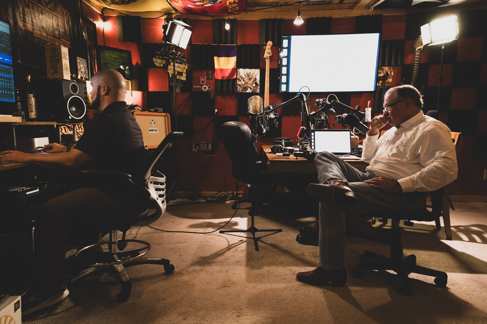

Euphony Productions
Crafting immersive audio experiences that bring stories to life

Crafting immersive audio experiences that bring stories to life
Euphony Productions LLC is an audiobook production company dedicated to transforming compelling stories into rich, immersive audio experiences.
From our studio, we handle every aspect of production — narration, sound design, mixing, and mastering — ensuring each project meets the highest standards of quality.
We specialize in bringing gritty, true-to-life narratives to listeners everywhere, working closely with authors to preserve the authenticity and power of their stories.
See Our WorkClandestine methamphetamine labs crept into Texas during the latter half of the 20th century, but certain members of the Texas Department of Public Safety's Narcotics Division are hellbent on stopping the malicious tide.
A gripping true-crime audiobook available now on Audible, Apple Books, Spotify, and more.
Explore The Point
February 1994, East Texas. Lilli Anne, a responsible 17-year-old junior at Lindale High, departed her shift as a Sonic carhop shortly after 10:00 p.m. The following morning her mother discovered her precious daughter did not come home. Nearby law enforcement and Texas Rangers launched a search, but their quest was to no avail.
Months later, the same wickedness migrated through rural Wise County. A handgun-wielding masked man committed an aggravated robbery near the courthouse square. The community, Sheriff Bill Bryan, and a newly promoted Texas Ranger relentlessly sought the criminal's identity — uncovering other young victims and numerous missing females across the southeastern states.
Dedicated Wise County residents, law enforcement officers, and prosecutors presented the Texas Criminal Justice System at its best. But immediately after the jury's sentencing, unsuspected internal corruption rose to the surface — and an attempted assassination targeted Texas Ranger Dan Allen.